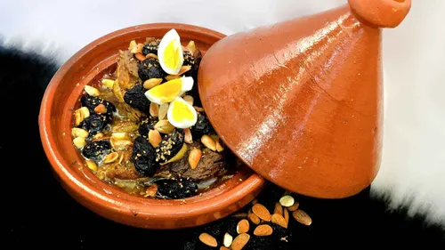
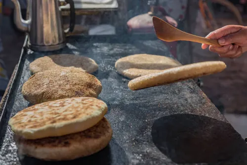
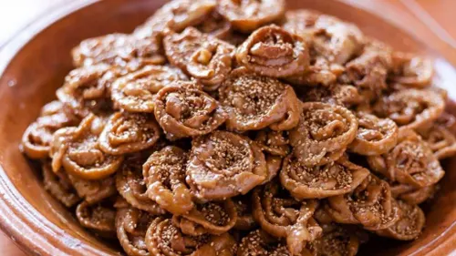
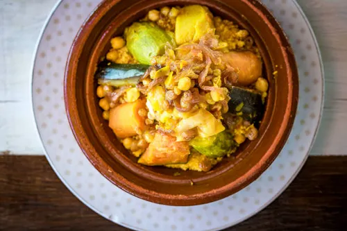
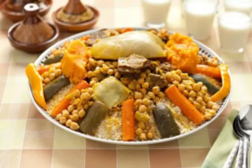
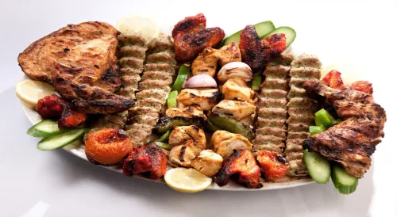
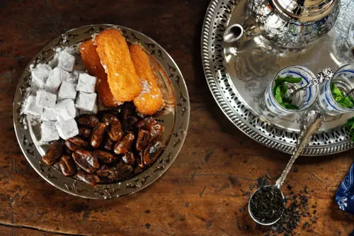
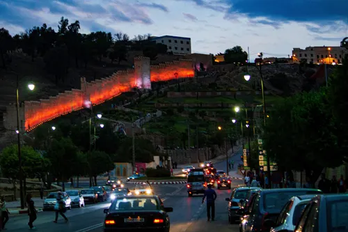

À faire
À faire
Explorez les meilleures activités à Taza grâce à ces idées inspirantes.
Choisissez une catégorie
Sélectionnez une catégorie dans le menu ci-dessus pour afficher les suggestions appropriées.
Résultats suggérés
Manger & Boire à Taza
Découvrez les saveurs de Taza à travers les plats locaux, les marchés traditionnels, les cafés paisibles et les expériences culinaires qui reflètent l'hospitalité marocaine.

Le Tajine Marocain Authentique
Découvrez l'art du tajine, ce plat mijoté lentement qui marie viandes tendres, légumes frais et épices aromatiques. Chaque bouchée raconte l'histoire culinaire du Maroc, où la patience et les ingrédients de qualité créent une symphonie de saveurs.
Pain marocain traditionnel
Le pain marocain traditionnel est un élément essentiel de la table marocaine. Il accompagne le tajine, la harira, les olives, le fromage et plusieurs plats locaux. À Taza, le visiteur peut le découvrir dans les marchés et les boulangeries traditionnelles.


Chebakia marocaine
La chebakia est l'une des pâtisseries marocaines traditionnelles les plus connues. Préparée avec du miel, du sésame et des épices parfumées, elle accompagne souvent la harira, surtout pendant le mois de Ramadan. À Taza, les visiteurs peuvent la goûter dans les pâtisseries et les boulangeries traditionnelles.
Seffa marocaine
La seffa marocaine est un plat traditionnel très connu au Maroc. Elle est généralement préparée avec des vermicelles ou du couscous, puis décorée avec du sucre glace, de la cannelle et des amandes. La seffa est souvent servie lors des fêtes et des occasions familiales, et elle est appréciée pour son goût délicat et sa présentation élégante. À Taza, les visiteurs peuvent découvrir ce plat dans certains restaurants locaux et cadres traditionnels.


Couscous marocain
Le couscous marocain est l’un des plats traditionnels les plus célèbres du Maroc. Il est généralement préparé avec des légumes et de la viande ou du poulet, puis servi lors des repas familiaux et le vendredi. À Taza, les visiteurs peuvent savourer ce plat dans les restaurants locaux ou dans des cadres traditionnels reflétant l’hospitalité marocaine.
Harira marocaine
La harira marocaine est une soupe traditionnelle très connue, préparée avec des tomates, des lentilles, des pois chiches et des épices. Elle est particulièrement appréciée pendant le mois de Ramadan. À Taza, les visiteurs peuvent découvrir ce plat dans les restaurants locaux et les cuisines traditionnelles qui préservent les saveurs marocaines authentiques.

Grillades marocaines
Les grillades marocaines comptent parmi les expériences culinaires appréciées par les visiteurs grâce à leurs saveurs riches et à leur préparation traditionnelle. Elles comprennent souvent de la viande, du poulet ou de la kefta grillée avec des épices marocaines, servies avec du pain local ou des salades. À Taza, les visiteurs peuvent les déguster dans les restaurants populaires et les lieux réputés pour la cuisine locale.
Thé marocain à la menthe
Le thé marocain à la menthe est un symbole de l’hospitalité marocaine. Il est servi dans un théière traditionnelle avec de petits verres et de la menthe fraîche. C’est l’une des boissons les plus emblématiques du Maroc, souvent présente lors des moments de convivialité et de l’accueil des invités. À Taza, les visiteurs peuvent profiter de cette expérience dans les cafés traditionnels, les maisons d’hôtes et les restaurants locaux.

Msemen marocain
Le msemen marocain est l’une des crêpes traditionnelles les plus connues du Maroc. Il se distingue par sa texture fine et ses multiples couches. Il est souvent servi au petit-déjeuner ou avec le thé marocain, et peut être dégusté avec du miel, du beurre ou du fromage. À Taza, les visiteurs peuvent le découvrir dans les boulangeries traditionnelles et les cafés locaux.
Matin et soir à Taza
Profitez des différents moments de la journée à Taza, du matin rafraîchissant au soir paisible.
Le matin à Taza
Commencez votre journée à Taza par une balade calme dans l’ancienne médina, les cafés locaux ou les marchés traditionnels, dans une atmosphère fraîche et agréable.
Découvrir le matin
Le soir à Taza
Le soir, les visiteurs peuvent profiter d'une ambiance calme, des vues sur la ville et des cafés locaux pour terminer la journée en douceur.
Découvrir le soir